What is Scrapyard?
Scrapyard is a Firefox bookmarking extension where you can store and organize bookmarks, page fragments, or complete documents in unlimited quantities. By utilizing browser local storage, Scrapyard does not require external tools for basic functionality and allows to import/export data in org-mode or JSON formats. With Scrapyard native helper application it is possible to import RDF archives of the legacy Firefox ScrapBook extension.
Where to Find Scrapyard
Scrapyard is accessible through the dropdown menu of Firefox sidebar as shown in the image below. The sidebar itself could be opened with the corresponding toolbar button: . In the more recent versions of Firefox it may be necessary to add this button to the toolbar manually.

Additionally, the Alt+Y keyboard shortcut allows to open Scrapyard directly.
Keyboard shortcuts provided by any extension could be
customized in Firefox settings.
Main Features
Capturing Pages
To capture a web-page or its fragment, select the part of the page you want to archive, open Scrapyard popup window by clicking its icon on the browser toolbar, choose the destination shelf and folder, then press the "Bookmark" or "Archive" button. The "Bookmark" button stores only web-page URLs, while the "Archive" button captures the current selection, the whole page, if there is no active selection, or the whole document, if the opened link is not a web-page (for example, a PDF file).
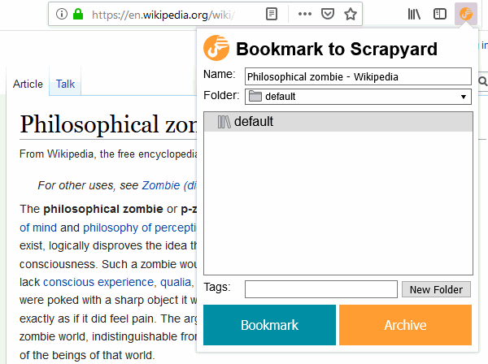
In the bookmark tree, archived pages are marked with italic font, while ordinary bookmarks have the regular one.
Bookmark Shelves
It is possible to create an unlimited amount of bookmark shelves to structure your bookmarks. The shelf named "everything" allows to browse and search through all existing bookmarks. Scrapyard built-in shelves are listed in bold font and cannot be deleted or renamed.
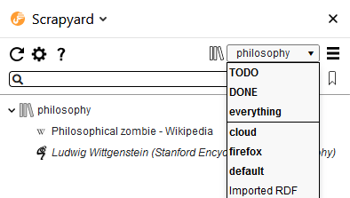
Search
The search input field at the Scrapyard sidebar allows to filter bookmarks of the current shelf by title/URL, tags, or content of the archived pages. Use the "Everything" shelf to search through all bookmarks.
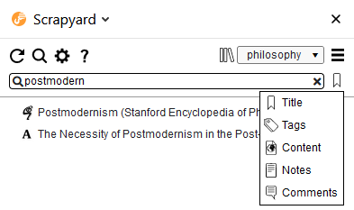
Additionally, it is possible to search through all bookmarks by title or URL from the Firefox URL-bar after entering the special "scr" keyword followed by a space:

If URL-bar search text begins with a plus sign (+), Scrapyard will interpret the rest of the
text as a tag name and will search by tags instead. By assigning unique tags to bookmarks
(with no leading plus sign) you may quickly open dedicated bookmarks without
using mouse, which may be relevant when multi-account containers are involved. It is
possible to activate Firefox URL-bar with the Ctrl+L keyboard shortcut.

By creating dedicated iShell commands to open specific bookmarks, you may access them even more quickly. A few examples could be found in Scrapyard automation documentation.
Cloud Bookmarking
Adding or copying/pasting bookmarks into a special shelf named Cloud makes them available across different Firefox instances that use a cloud provider with the same credentials. Cloud providers are configurable at the addon settings (currently, only Dropbox is supported).
Scrapyard application for Android allows to save links and text into the Cloud shelf from mobile devices, and browse the contents of this shelf. See the corresponding section below for more details.

Sharing Bookmarks
A bookmark or archive could be shared to either Pocket or Dropbox through the "Share" context menu. Files that are shared to Dropbox appear at the "Apps/Scrapyard" Dropbox folder. Only links could be shared to the Pocket application. The "Cloud" menu item copies any selected items to the Scrapyard Cloud shelf.

Firefox Bookmarks
Scrapyard seamlessly integrates with Firefox bookmarks, so there is no need to switch to the built-in bookmark manager. You may attach comments and TODO states to Firefox bookmarks displayed in Scrapyard, although they will be lost if the bookmarks are deleted from the Firefox UI, or after the "Show Firefox bookmarks shelf" option in settings is unchecked. Firefox bookmarks are included in the export as a separate shelf, so import will leave the current Firefox bookmark state intact.

Firefox Multi-Account Containers
Any Scrapyard bookmark could be opened in one of the Firefox Multi-Account containers, available through the "Open in Container" context menu of a bookmark, archive, or folder. Scrapyard will open the original URL of an archive with this menu, and all the items located inside a folder, if a folder is selected.
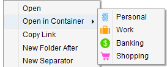
Additionally, it is possible to assign a container to a bookmark in its property dialog, as
it shown in the image below. Such bookmarks will automatically open in the corresponding
container, even when selected through the URL-bar search initiated by the "scr" keyword.
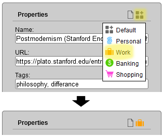
TODO
It may be convenient to prioritize your bookmarks for processing with TODO states. Each bookmark may have one of the following TODO priorities: TODO, WAITING or POSTPONED. You may find all your prioritized bookmarks at the built-in shelf named TODO, sorted in the corresponding order. All bookmarks marked as DONE or CANCELLED are displayed at the DONE shelf.

If the path of a bookmark parent folder above its title provides not enough context, it is possible to fill the "Details" and "Date" fields at the bookmark property dialog. Only ISO (YYYY-MM-DD) date format is supported. Expired TODO items will be displayed first regardless of the assigned state.
Markers
Every archived page provides a toolbar which offers several types of text markers to highlight sections of interest. The "Auto open" check makes the marker menu to open automatically when some text is selected. The "Edit document" button allows to clean the document of unnecessary elements by direct editing of its content. It is also possible to type in something, press F7 to display the caret. Alternatively, HTML code of a page may be modified through the browser developer tools accessible through the F12 keyboard key. Press "Save" after you have finished document editing.
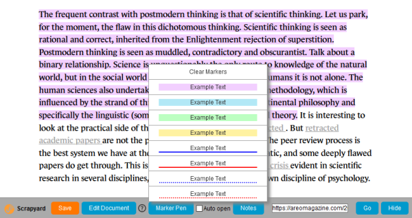
Bookmark Comments
While the "Details" field in the bookmark properties is intended for display at the TODO shelf, bookmark property dialog also allows to enter quick comments by clicking on the "page" icon at its top-right corner.
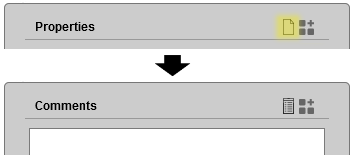
Subsequent clicks on the icon alternate between the comment input field and bookmark properties.
The comment icon of bookmarks with filled-in comments takes the form of a "lined page".
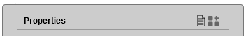
Notes
It is possible to attach more elaborate text notes with hyperlinks and images to every bookmark, or even create dedicated note-only bookmarks. Click "Open notes" in the context menu of a bookmark to show its note editor/viewer. Click "New notes" in the context menu of a folder to create a note-only bookmark. Items with non-empty notes are highlighted by the underlined text in the bookmark tree.
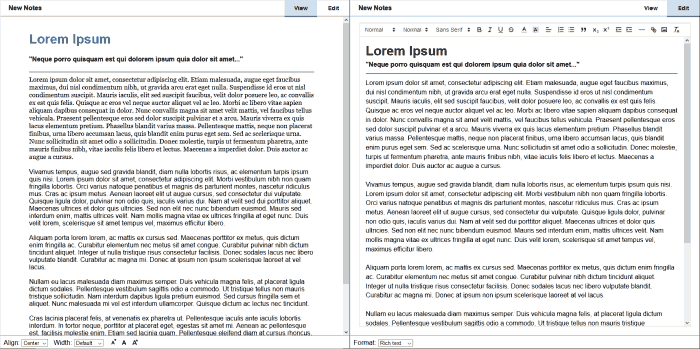
Notes could be entered in rich text format (using a visual editor), Markdown, Org-mode markup or plain text. The format selector dropdown list is located at the bottom left corner of the "Edit" tab. Notes in Org format may have an automatically generated table of contents. Insert the example markup into the note editor to explore what options are available.
The text in the note editor is saved automatically, although you may save it at any time with the Ctrl+S
keyboard shortcut.
Referencing to a bookmark or archive
To make a reference to a Scrapyard bookmark or archive from the note markup, create a link with the following URL:
ext+scrapyard://<BOOKMARK UUID>, for example:
ext+scrapyard://A4D409A0D1034D9BA0863E9DA8CE8FE7
When necessary, it is possible to add a hash with a link description:
ext+scrapyard://A4D409A0D1034D9BA0863E9DA8CE8FE7#short-bookmark-description
To refer the notes of a bookmark add notes: before the UUID:
ext+scrapyard://notes:A4D409A0D1034D9BA0863E9DA8CE8FE7
UUID of a bookmark is available from its property dialog:

Import/Export
Scrapyard allows to import bookmarks in Netscape HTML format which you may obtain from Firefox, Chrome or other web-browsers. Its own collections of bookmarks and archived pages could also be exported or imported in ORG and JSON formats through the corresponding items of the shelf operations menu:

Install Scrapyard helper application if you need to export the large amount of content (greater than the volume of available system RAM).
Importing Legacy ScrapBook RDF Archives
To import legacy ScrapBook RDF archives you also need to install Scrapyard helper application. There are two import modes: the full import, which transfers saved files into Scrapyard database, and the quick import which only recreates RDF directory structure and leaves the archived ScrapBook files on disk. See the "Import RDF" tab of the settings page for more details about the available import options.
Shelves imported in the quick mode are marked with a tape reel icon. It is possible to add new archives to them (simple bookmarks are not included into the underlying RDF file), and physically delete RDF entries along with attached files. But when the entire shelf is deleted, the corresponding RDF file and the archived pages are left intact. Some features, such as page editing and bookmark transferring/copying are not available for the shelves imported in quick mode.
It is possible to edit the path of the imported RDF file through the "RDF Directory..." context menu item of a shelf.
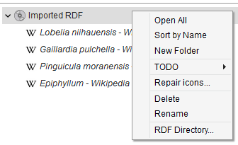
Displaying Random Bookmarks
Random bookmarks from your collection could be displayed at the bottom of the Scrapyard sidebar. Check the corresponding option in the settings to enable this feature. The displayed bookmark is changed every 5 minutes, it also could be updated by a user request through the "Refresh" button. The "Find" button allows to locate the bookmark at the Scrapyard sidebar by opening its shelf and folder.

Saving Links and Content from Mobile Applications
Scrapyard application for Android allows to save links and content into the Scrapyard Cloud shelf from mobile devices. It uses the standard Android sharing functionality, which may be tricky to deal with, as it is shown in the examples below.
At first, you need to enable cloud support in Scrapyard itself by checking the corresponding option at the "Cloud" setting tab and sign into Dropbox.
Then you need to install the Scrapyard application on your device and sign into the same Dropbox account from its front screen.
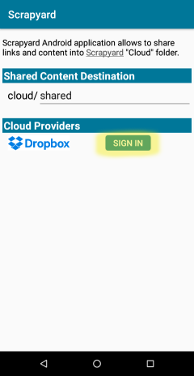
To share a link from the application of choice, find and tap the "Share" button or menu item in it. The example below highlights the "Share" button in the mobile Firefox application.
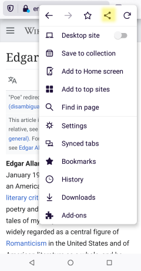
After that, you need to select the destination application to send URL into. The interface may differ from app to app, and you may need to scroll or press additional buttons to find the necessary sharing target. The icon of the Scrapyard Android application is highlighted at the image below. Tap on it and you are done.
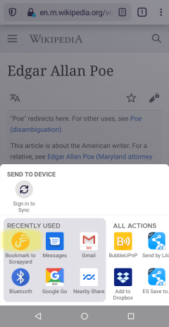
Sharing of text is usually performed from the corresponding selection toolbar:
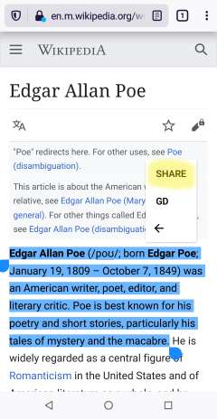
It is only possible to share plain text without links and images from Android platform. Generally, selected text is shared to Scrapyard in the form of notes without a source URL. To save source URL, share text from the Pocket app.
Text Command Interface
It is possible to issue commands to Scrapyard through the text command interface offered by iShell Extension. To control Scrapyard with text commands just install iShell. In most cases, the command interface allows to significantly reduce the number of actions needed to create a bookmark or to archive a page.
The "shelf" command
With the "shelf" command you can quickly switch to a shelf or folder, or even create a new one without using mouse.
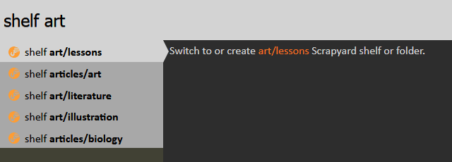
The "bookmark" and "archive" Commands
Use the "bookmark" or "archive" commands with the corresponding arguments to bookmark/archive a page into the specified destination. The arguments allow to specify bookmark title, details, path, tags, TODO state and expiration date. Folders in the bookmark path will be autocompleted by iShell and created in Scrapyard if they do not exist.
The first folder in the path is always interpreted as a shelf name. The tilde (~) character may be used in place of the "default" shelf. Contents of the Firefox "Bookmarks Menu" and "Other Bookmarks" bookmark folders may be accessed with the "@" and "@@" shortcuts respectively.
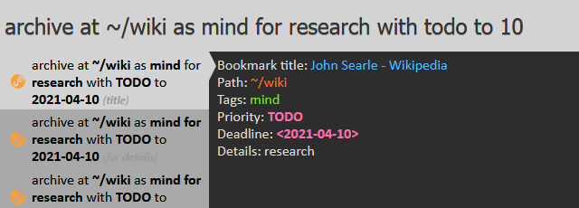
The "scrapyard" Command
The "scrapyard" command allows to browse and search through the collection of bookmarks at the specified destination. See iShell command help for more details.
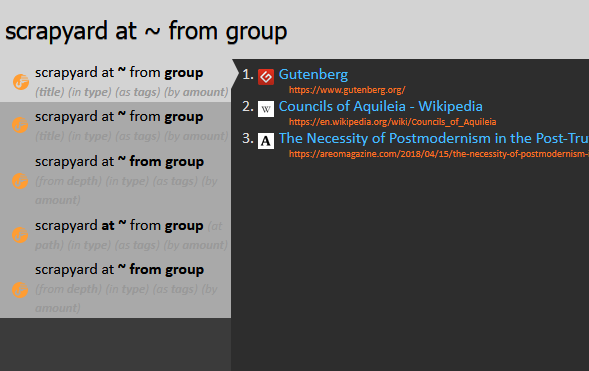
Creating Custom Capture Commands
If you often save bookmarks with similar properties to the same destination, it is possible to create custom capture commands with predefined parameters. The "CAPTURE" link at the bottom-right corner of iShell command editor allows to insert a template of a such command. In addition to the predefined parameters, custom capture commands allow to specify comma-separated CSS selectors for elements that will automatically be retained or deleted. A custom CSS-style could be added into the captured document through the "style" option.
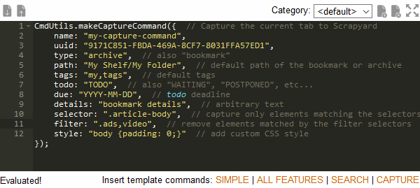
Automation
By using the automation API provided by Scrapyard, it is possible to programmatically create, modify, and delete bookmarks or page archives from iShell commands and your own extensions. See the automation API documentation for more details.